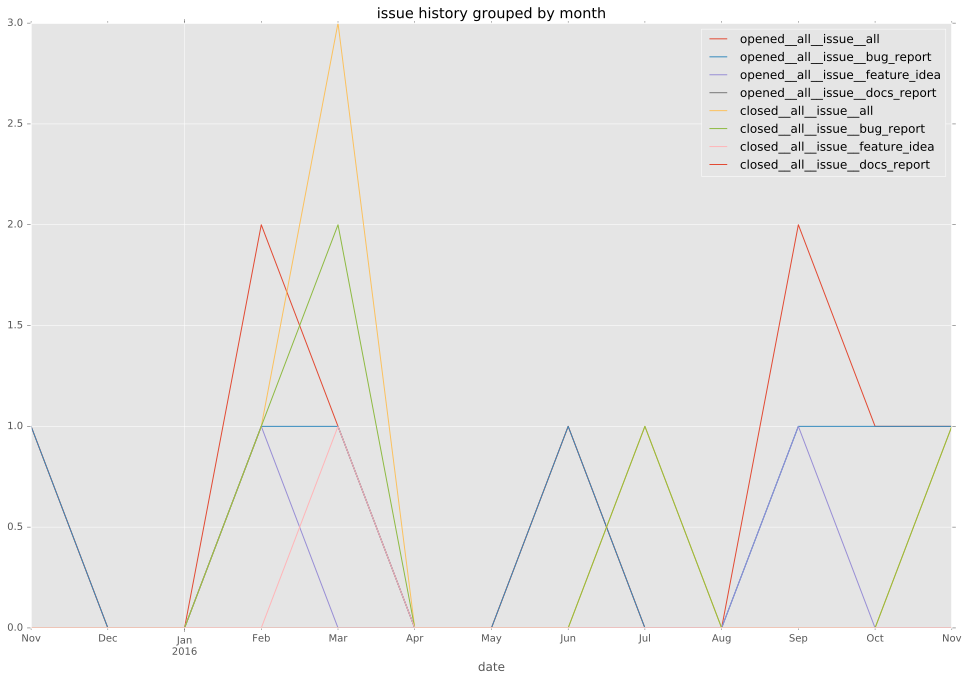
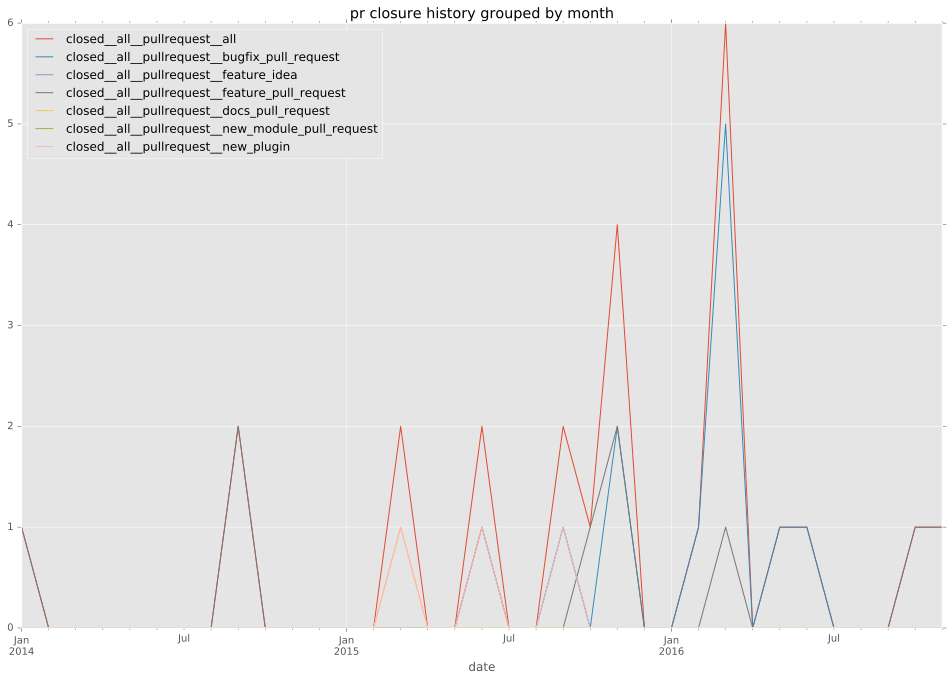
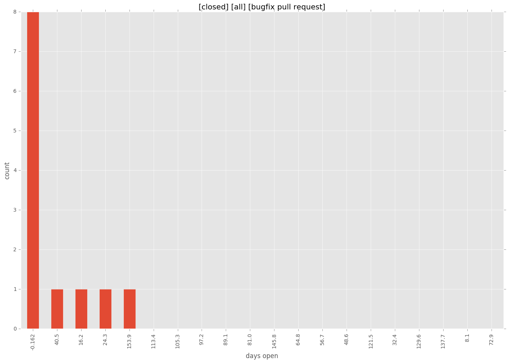

authors
- cove
- harrisongu
maintainers
- eikef
contributors
- cove : 50 commits
- eikef : 19 commits
- ritzk : 11 commits
- resmo : 8 commits
- bcoca : 8 commits
- mscherer : 6 commits
- thelan : 5 commits
- rpettersen : 3 commits
- m4mnux : 2 commits
- gregdek : 2 commits
- abadger : 2 commits
- lalinsky : 1 commits
total issue counts
feature pull request: 10
pullrequest: 25
docs pull request: 1
bugfix pull request: 12
feature idea: 2
issue: 7
new plugin: 2
bug report: 5
issue history

pullrequest history

days open by issue type
bugfix pull request
count: 17
std: 39.1846120758
min: 0
max: 162
median: 3.0
mean: 19.0588235294
all
count: 38
std: 60.7201916871
min: 0
max: 225
median: 15.0
mean: 40.3684210526
pullrequest
count: 0
std: nan
min: nan
max: nan
median: nan
mean: nan
docs pull request
count: 2
std: 0.0
min: 0
max: 0
median: 0.0
mean: 0.0
feature pull request
count: 11
std: 79.3247639884
min: 0
max: 225
median: 54.0
mean: 75.7272727273
feature idea
count: 1
std: nan
min: 43
max: 43
median: 43.0
mean: 43.0
issue
count: 0
std: nan
min: nan
max: nan
median: nan
mean: nan
new plugin
count: 3
std: 96.9948452239
min: 1
max: 169
median: 1.0
mean: 57.0
bug report
count: 4
std: 38.904798333
min: 11
max: 98
median: 27.0
mean: 40.75
closures grouped by total days open
